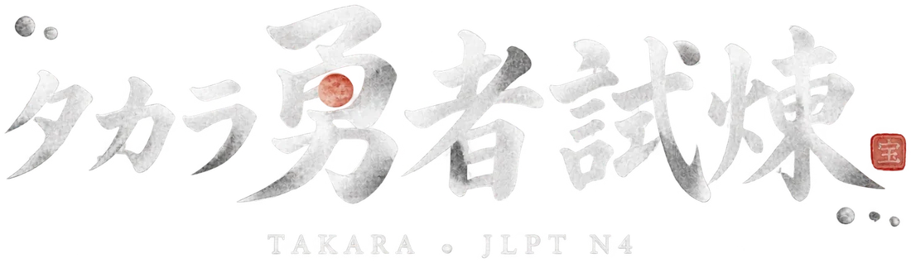

清單裡沒有好聽的聲音？iPhone：設定 → 輔助使用 → 朗讀內容 → 聲音 → 日文，下載 Kyoko 或 O-ren 的增強版。Mac：系統設定 → 輔助使用 → 朗讀內容 → 系統聲音 → 管理聲音。下載完重新打開 App。
あなたの HP（你的血量）
每一題練滿三天（三個日期徽章）就會收進來。試煉答對會自動蓋今天的章，題庫裡也可以按「今日」自己蓋。
模擬考當天和前 3 天，首頁「今日學習計畫」會出現提醒。
朋友打開後，進度會存在他自己的手機裡；沒有登入 Claude 就不會跨裝置同步，其他功能都能用。
點頭像選要跟誰聊，兩個人的聊天紀錄分開存。寫錯會被吐槽＋教你正確說法；看不懂就點泡泡看中文，用中文寫也可以。
不會沒關係，先在這裡看懂再去打。全部 0 筆，答案、翻譯、說明都在。